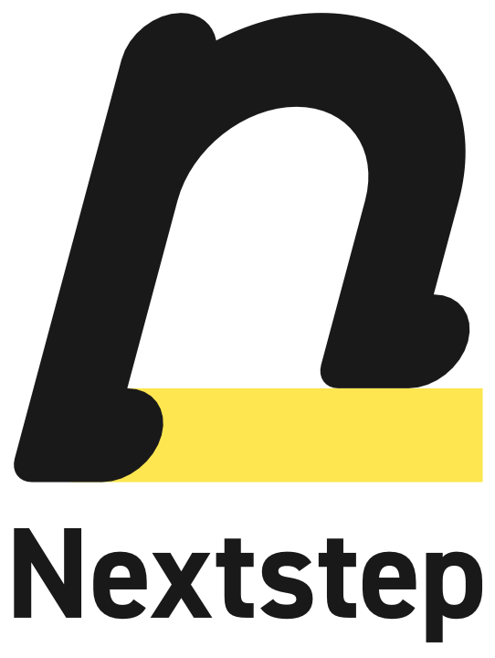

「分かっているのに、
言葉にできない。」
その想いを、
仕組みに変える。
建設現場を知る「翻訳家」として、
社長の頭の中にある違和感・経験・判断を、
AI・数字・文章・業務フローに変えていきます。
全てのビジネスを、
“ワクワク”
の舞台に変える。
仕事は、本来おもしろい。
現場には、挑戦がある。
数字の先には、人の物語がある。
一つの判断の裏に、積み上げてきた経験がある。
けれど、日々の忙しさの中で、
その“ワクワク”は、少しずつ見えなくなっていく。
Nextstepは、AIと仕組みの力で、
ムダな作業と迷いを減らし、
一人ひとりが「本当にやりたいこと」に
集中できる状態をつくります。
作業が減れば、挑戦が増える。
迷いが消えれば、ワクワクが戻る。
全てのビジネスを、“ワクワク”の舞台に。
それが、Nextstepの目指す景色です。
「分かっているのに、
言葉にできない。」
それは、建設業の現場でよく起きることです。
社長の頭の中には、答えがある。
職人の感覚にも、理由がある。
現場の違和感にも、必ず背景がある。
けれど、それが言葉にならない。
数字にならない。
仕組みにならない。
だから、伝わらない。
続かない。
会社に残らない。
Nextstepは、建設業の“言葉にできない”を、
AI・文章・数字・業務フローに翻訳します。
現場の想いを、会社の仕組みに。
それが、Nextstepの仕事です。
AIが使えない理由は、
ツール不足ではなく、
分解不足です。
ChatGPTも、無料ツールも、目の前にある。
でも、なかなか現場で使いこなせない。
理由はシンプルです。
自分たちの仕事を、
目的・成果物・業務・作業・手順まで
分解できていないからです。
AIは、あいまいな指示では動けません。
でも、仕事が分解されれば、
AIは現場の力になります。
ここまで分解できれば、AIが動き出す。
建設業を、
AIと実行支援で前に進める。
Nextstepは、建設業を起点に、
業務改善・人材育成・採用広報・現場支援を横断して支援します。
AI活用研修
職人・スタッフが、AIを使いこなせるように。
ChatGPTの使い方だけを教えるのではなく、見積書、工程表、議事録、社内共有、採用文、営業資料など、日々の業務にそのまま使える形まで落とし込みます。
建設業向けAIお試し開発
まず小さく作って、効果を確かめる。
大きなシステムをいきなり作るのではなく、現場で本当に使える小さな仕組みから始めます。日報、見積、問い合わせ対応、採用管理、社内ナレッジなど、業務に合わせてAI活用を設計します。
建設業特化型YouTube運用代行
業界を知る目線で、集客・採用につなげる。
ただ動画を作るのではなく、会社の強み、職人の魅力、現場のこだわりを、伝わる言葉と映像に変えます。
建設 / 外構の下請け工事
建設工事を原点に持つ会社だから、現場まで分かる。
Nextstepは、7年前に建設工事の会社として立ち上がりました。だからこそ、机上の支援だけではなく、現場の段取り、職人とのやり取り、工事の流れまで理解したうえで支援できます。必要に応じて、建設・外構工事そのものも対応します。
現場とAIに、
誠実に向き合ってきた証。
- 上場企業でのAIリスキリング研修
- 大学でのAIセミナー
- 工務店YouTubeの運用支援
- 建設・不動産系動画の企画・制作・分析
- 建設業の業務改善
- 採用広報
- 現場目線での仕組み化
- 建設工事を原点とした現場対応
- 工事の段取り・職人連携・現場管理
次の一歩を、
現場と共に。

小規模AIシステム開発
YouTube運用代行
建設・外構工事
まだ言葉になっていない相談から、
お聞かせください。
「何を頼めばいいか分からない」
「社内の課題をうまく説明できない」
「AIを使いたいけど、
何から始めればいいか分からない」
その段階からで大丈夫です。
Nextstepが、課題を一緒に整理します。
nextstep@techsupply.work